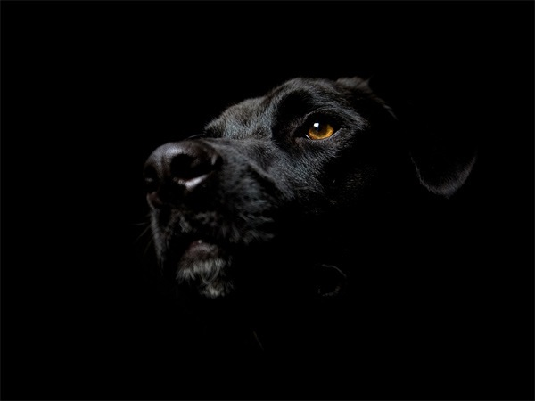

DOGS ARE EVEN MORE LIKE US THAN WE THOUGHT

It's likely no surprise to dog owners, but growing research suggests that man's best friend often acts more human than canine.
Dogs can read facial expressions, communicate jealousy, display empathy, and even watch TV, studies have shown.
They've picked up these people-like traits during their evolution from wolves to domesticated pets, which occurred between 11,000 and 16,000 years ago, experts say.
In particular, "paying attention to us, getting along with us, [and] tolerating us" has led to particular characteristics that often mirror ours, says Laurie Santos, director of the Yale Comparative Cognition Laboratory. (Read more about how dogs evolved in National Geographic magazine.)
Here are a few of the latest studies showing the human side of our canine companions.
EAVESDROPPING DOGS
Social eavesdropping—or people-watching—is central to human social interactions, since it allows us to figure out who's nice and who's mean.
According to a study published in August in the journal Animal Behaviour, our dogs listen in too. (Read "Animal Minds" in National Geographic magazine.)
In a new study, scientists tested 54 dogs that each watched their owners struggle to retrieve a roll of tape from a container. The dogs were divided into three groups: helper, non-helper, and control.
In the helper group, the owner requested help from another person, who held the container. In the non-helper group, the owner asked for help from a person, who then turned their back without helping. In the control group, the additional person turned his or her back without being asked for help. In all experiments, a third, "neutral" person sat in the room.
After the first round of experiments, the neutral person and the helper or non-helper both offered treats to the dog.
In the non-helper group, canines most frequently favored the neutral person's treat, shunning the non-helper. However, in the helper group, the dogs did not favor either the helper or the neutral person over the other. Scientists have previously observed similar results in human infants and tufted capuchin monkeys. (See "Can Dogs Feel Our Emotions? Yawn Study Suggests Yes.")
So are dogs taking sides by ignoring the people who are mean to their owners? Only future research will tell.
MADE YOU LOOK
Gaze following is instinctual for many animals—including humans, chimps, goats, dolphins, and even the red-footed tortoise—because it alerts animals to everything from immediate threats to "a particularly tasty berry bush," says Lisa Wallis, a doctoral student at the Messerli Research Institute in Vienna, Austria.
Dogs were previously thought to follow human gazes only when food or toys were involved. Now, a new study suggests dogs also follow human gazes into blank space—but only if they're untrained. (See "5 Amazing Stories of Devoted Dogs.")
"We know they should be able to do it," says Wallis, leader of the research published in August in the journal Animal Behaviour, but training was the "missing piece of the puzzle."
In recent experiments, Wallis and her colleagues recruited 145 pet border collies with a range of training levels and ages.
The researchers wanted to see if age, habituation, or training influenced the dog's tendency to follow a human's gaze.
Wallis then observed the dogs' reactions as she gazed toward a door. Surprisingly, only the untrained border collies followed her gaze—the trained animals ignored it. That may be because trained dogs learn to focus on a person's face, and not where the person is looking.
When Wallis and colleagues spent just five minutes teaching the untrained dogs to look at her face, they began ignoring the instinct to follow her gaze.
Even more surprising is that the untrained dogs often glanced back and forth between her and the door, baffled at what she was looking at. The behavior, only seen before in humans and chimps, is called "check backs" or "double looking," she said. (Read about war dogs in National Geographic magazine.)
"It's a lesson for us all that we should always examine whether training has an effect in these types of studies," says Wallis.
NEXT STEPS IN DOG RESEARCH
In humans, aging hastens declines in short-term memory and logical reasoning skills, making it more difficult to learn new tasks. Previous research has found similar declines in dogs, but long-term memory is a little-known aspect of dog biology. (See "Many Animals—Including Your Dog—May Have Horrible Short-Term Memories.")
That's why Wallis and colleagues are studying how dogs both young and old memorize tasks, and whether the animals can remember them months later.
The results are still in the works, but Wallis expects to discover that it's tough—but not impossible—to teach old dogs new tricks.